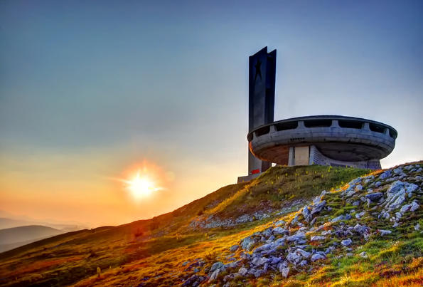
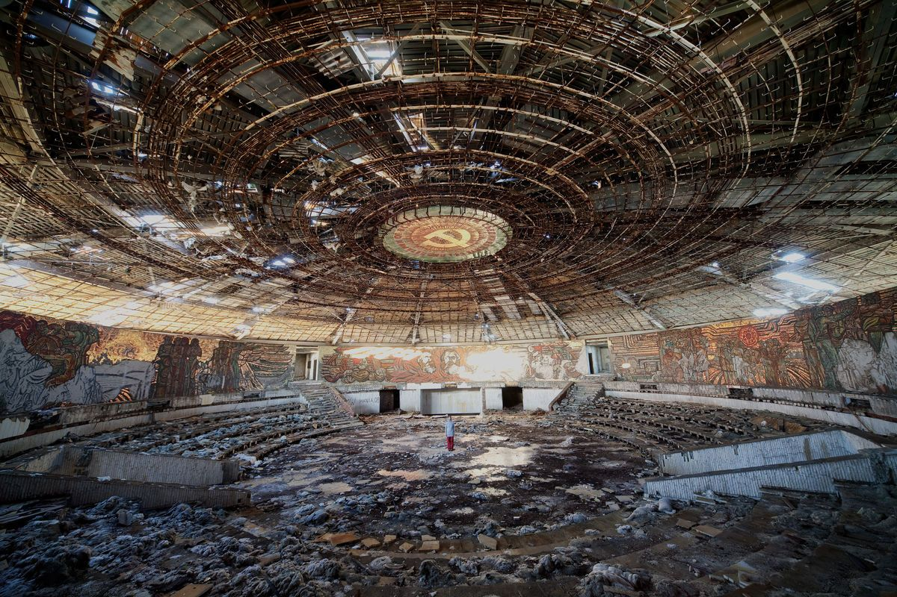
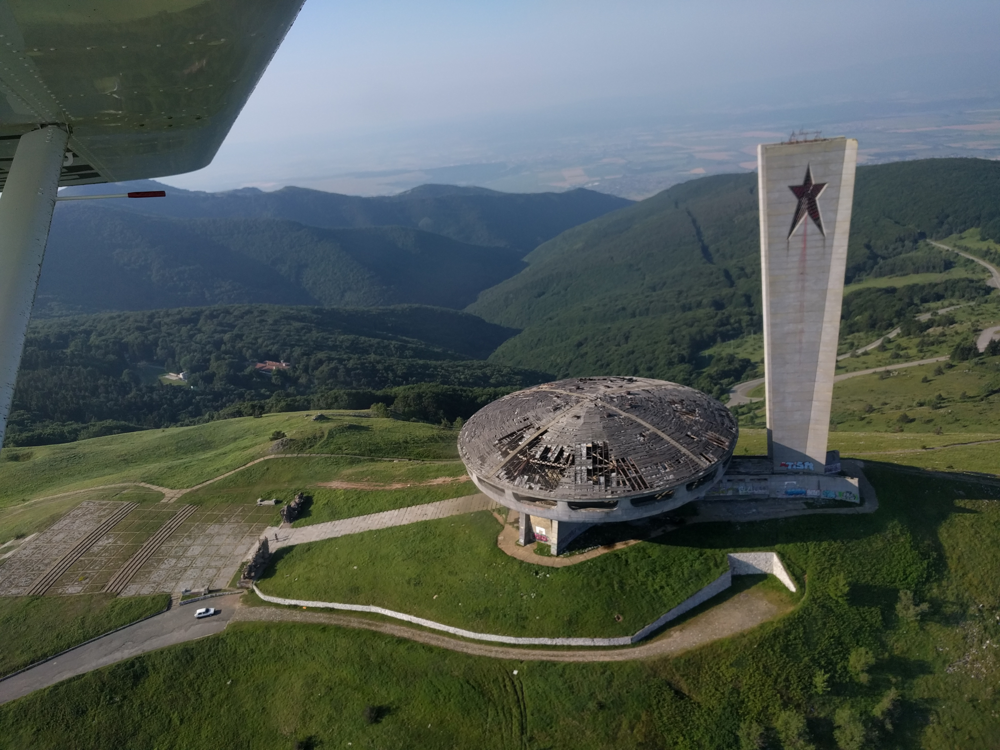

Решение за изграждане на Дом паметника на БКП се взима от Секретариата на ЦК на БКП на 11 март 1971 г. Строежът му започва през 1974 г. и се финансира с дарения на стойност 14 186 000 лв. В строежа участват тогавашните Строителни войски и доброволци-бригадири, организирани от ДКМС. Ръководител на грандиозния обект е командирът на старозагорската строителна дивизия генерал Делчо Делчев. Паметникът е открит на 23 август 1981 г. лично от партийния и държавен лидер Тодор Живков.
Ако искате една необикновенна VR разходка из паметникът Бузлуджа просто натиснете тук!
Паметникът Бузлуджа е затворен и оставен да тъне в забрава на своя планински връх в продължение на половин десетилетие. В края на 90-те, България страда от икономическа криза и несигурно бъдеще. Много граждани обвинявали предишния режим и след 1997 г. консервативното и силно антикомунистическо правителство, ръководено от премиера Иван Костов започна събарянето на видни паметници от времето на комунизма.
Днес, Дом паметника на връх Бузлуджа е бледо подобие на едновремешното си величие. Стъклата липсват от прозорците, червените звезди са изпочупени, а сложните стенописи, окрасяващи интериора са започнали да се разпадат под влияние на метеорологичните условия. Дори в това разрушено състояние, Бузлуджа започва да привлича нови посетители. Комбинацията на спиращо дъха местоположение, меланхоличната атмосфера на разпад и голямото политическо значение на паметника скоро започват да привличат вниманието на световните медии. Снимки на паметника Бузлуджа се разпространяват по цял свят и хора от всички краища на планетата се стичат към Бузлуджа. Паметникът често е описван като една от най-красивите модерни руини и получава широко признание за своите забележителни инженерни и архитектурни постижения.
